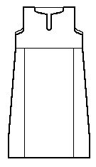

Return to Contents.
Some Clothing of the Middle Ages -- Tunics -- Lyoo?, by I. Marc Carlson, Copyright 1997. This code is given for the free exchange of information, provided the Author's Name is included in all future revisions, and no money change hands-